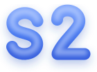

사이Sai · Toss Designer Challenge 2026
좋은 시간을 찾지 말고,
싫은 시간만 익명으로 지우세요.
참석자가 부담스러운 시간만 익명으로 지우면(veto),
남은 시간 중에서 주최자가 확정하는 회의 일정 앱이에요.

좋은 시간을 찾지 말고,
싫은 시간만 익명으로 지우세요.
참석자가 부담스러운 시간만 익명으로 지우면(veto),
남은 시간 중에서 주최자가 확정하는 회의 일정 앱이에요.